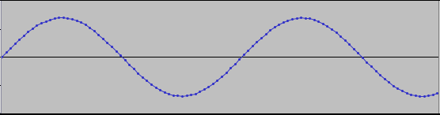
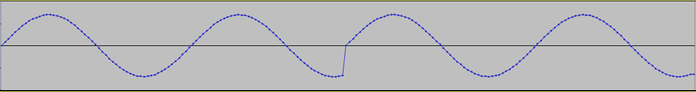
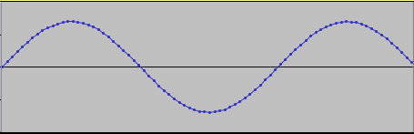
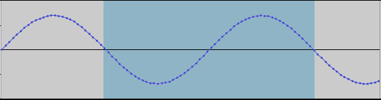

Looping sounds
Specifying loop parameters
Some sounds are simply played from beginning to end; for example, a
line of spoken dialog, a gunshot, or a footstep. For some other
sounds, it is useful
to be able to play the sound in a loop. For example, in a
car racing game, you might want the sound of the engine to play in a
continuous loop while the car is in motion.
You can simply loop a sound from the beginning to the end; you can also
loop just a section of the sound. For example, for our car engine
sound, sample frames 0-1000 might contain the sound of the engine
starting up; sample frames 1000-2000 might contain the loop of the
engine running; and sample frames 2000-3000 might contain the sound of
the engine dying. If you set the loop start and end to 1000 and
2000 and the loop count to -1, when you play the sound, you would first
hear the sound of the car starting up, then the sound of the car
running would loop continuously until you explicitly tell it to
release, at which point you would hear the sound of the engine dying.
There are a few ways to specify loop parameters for a sound: in the source
audio file, as sound attributes in cktool,
or at runtime using the API.
Specifying loop parameters in an audio file
Both the WAV and AIFF file formats can store loop information; however,
not all audio editors include loop information when they export WAV or
AIFF files, so you may wish to test this with your editor of
choice. (For example, Sony Sound Forge does export loop
information; the free Audacity editor does not.) If cktool
detects a loop in the source audio file when generating a bank sound or
stream sound, it automatically sets the loop start, end, and count from
the data in the audio file.
If you audio editor does not support loops, but does support named
regions, you can mark your loop as a region named "loop", and cktool
will set the loop start and end based on the region.
Loop settings from the audio file can be overridden by either sound
attributes in cktool or by API calls at runtime.
Specifying loop parameters as sound attributes in cktool
You can also specify the loopStart, loopEnd, and loopCount sound attributes
to cktool when creating bank sounds or
stream sounds; see the cktool
documentation
for more details on how to use these attributes. Sound attributes
will override loop data in the source audio files, but can be
overridden by API calls.
Specifying loop parameters at runtime
Finally, you can specify loop parameters at runtime using the API; for
example, CkSound::setLoop(), CkSound::setLoopCount(),
and CkSound::releaseLoop().
Creating seamless loops
Creating audio data that loops seamlessly, without pops or clicks at
the loop point, is somewhat of an art. In general, you want to
minimize the discontinuity between the last sample of the loop and the
first sample of the loop.
Take a look at this simple example, using a simple sine wave:

If we were to loop over this entire file, the discontinuity between the
last and first samples would cause a noticeable click. The
resulting waveform would look something like this:

A solution would be to trim the data off the end, so the audio data looks
like this:

Or, rather than loop from beginning to end, set the loop points to minimize
the discontinuity, for example, at zero crossings:

If your data is encoded as ADPCM, this is tricker, because the loop
points must be at multiples of 36 samples, which is the ADPCM block
size.